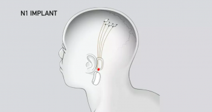

Elon Musk planea la prueba humana de la interfaz cerebro-computadora en el 2020 a través de Neuralink
21 JULIO, 2019
21 JULIO, 2019
Elon Musk ha hablado por fin sobre los últimos desarrollos de Neuralink, la startup de neurotecnología que espera crear una interfaz entre humanos y computadoras.
En una charla en la Academia de Ciencias de California en San Francisco, Musk reveló que han probado un implante que le permite a un mono controlar una computadora con su cerebro. También se han acercado a los reguladores de EE. UU. para obtener la aprobación para las pruebas del dispositivo en humanos
Este es un tema delicado, pero definitivamente necesitamos ya hablar del elefante en la habitación, en este caso, el mono en la habitación, dijo Musk a la multitud durante la sesión de preguntas y respuestas de la charla.
Como explica Musk, los seres humanos ya interactúan con los sistemas digitales cuando usamos un teléfono inteligente o una computadora portátil. Sin embargo, la entrada se logra a través del toque de nuestros dedos y pulgares, lo que significa que el flujo de información es relativamente lento. Este implante espera crear una interfaz casi instantánea entre un sistema digital y el cerebro, en la medida en que la computadora se convierta en una extensión perfecta de nuestra propia cognición.
El dispositivo consiste en una pequeña sonda de hilos ultrafinos y flexibles, más delgados que un cabello humano, que puede detectar la actividad de las neuronas y «leer» el cerebro de manera efectiva, aunque sea una parte muy pequeña.
Ciertamente, todo suena muy emocionante, pero todavía hay innumerables obstáculos y problemas que superar antes de que esto se convierta en una realidad. Los ejecutivos de Neuralink dijeron a The New York Times que saben que tienen un «largo camino por recorrer» antes de que el proyecto tenga usos prácticos reales aunque ya esperan comenzar a probar la tecnología en humanos en el 2020.
Eventualmente, Neuralink espera ser usado para tratar una variedad de lesiones y enfermedades cerebrales, incluyendo todo, desde la parálisis hasta el Alzheimer.
A más largo plazo, también espera evitar la "amenaza existencial de la IA", en palabras de Musk. La teoría dice que una interfaz perfecta entre el hombre y la computadora le daría a la humanidad la opción de unirse a la IA, en lugar de convertirse en su distracción radicalmente inferior.
En última instancia, podríamos hacer una interfaz completa de cerebro-máquina, lo que significa que podríamos lograr una especie de simbiosis con inteligencia artificial, dijo Musk a la multitud en el evento.
Creo que esto va a ser importante a escala de toda la civilización, agregó. Incluso bajo una IA benigna, nos quedaremos atrás. Con una interfaz cerebro-máquina de alto ancho de banda, tendremos la opción de seguir adelante con el viaje.